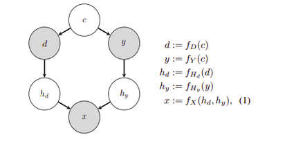
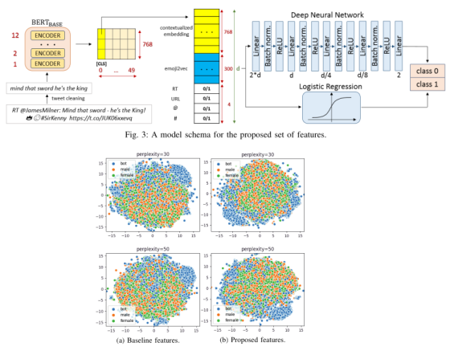

Background
I've completed two theses focusing on the exciting intersection of machine learning and computer vision:
Bachelor Thesis: Convolutional Models for Person Localization in Sport Broadcasts
This thesis tackled the challenge of automatically detecting football players in video footage. To achieve this, I utilized:
- State-of-the-art object detection: I employed Facebook's Mask-RCNN, a powerful deep convolutional network.
- Real-world data: I trained the model using a 10-minute football match video with meticulously annotated player positions.
- Fine-tuning for domain specificity: I adapted the Mask-RCNN model to excel in the context of sports broadcasts.
- Architectural advantage: The model's architecture included a bilinear interpolation layer, which significantly improved accuracy by addressing discretization issues arising from the image-to-grid conversion process. This innovation gave the model a performance edge over other contemporary approaches.
My master thesis was "Semantic segmentation of buildings in satellite imagery" development of the deep learning data pipeline and research about domain adaptation methods, applied to images, whose aim is to transfer features from one domain to another. To be more specific, it's aim is to create a new dataset D' which is obtained by transferring image features from unannotated D2 to annotated D1 through adverserial learning tactics. We do this in order to reduce covariate shift which happens because model learned spurious features which doesn't have predictive power.

In this figure, you can see directed acyclic graph which describes data generation for one data example x in D. X is the union of the two set of features, the target object feature(y) and environment features(d). Basically, in ideal scenario, model should ignore environment features and only focus on the target features. It shouldn't care if the cat is on the tree or on the grass, it should only detect a cat. Generally, this things are now very popular and casual inference field is dealing with this. I have worked for a semester in a startup whose goal was to produce end-to-end computer vision ML platform for detecting browser objects such us URL or SSL key in order to assess the plausibility of the phishing attack. The project encompassed the planning and execution of data collection steps, data processing, choosing the right model and empirically test them, implementing quantitative measures for assessing the model performance and to transform the annotations and data across different platforms and systems in order to align the different systems.
As a student, I published one research article in the IEEE 7th International Conference on Data Science and Advanced Analytics at Sydney, Australia in an NLP field.
The article can be found here. The goal of the paper was to pretrain the Transformer model for classifying the tweets in the bots/human category, do feature engineering of the dataset and exploratory data analysis with the goal
of describing our dataset and demonstrate some hidden relationships in it. In the paper, we used the Latent Dirichlet Allocation, LDA, which was used for the purpose of extracting topics or hidden topics which occur together. We introduced new features
such as emojis, links and hashtags indicators in order to increase the performance of the models. Besides that, we used the t-SNE methods for mapping the data from multidimensional space to 2D, in order to check how does introduction of these
new features improve the scores. In the end, we tested the functioning of the shallow machine networks with the deep transformer architecture on the classifiation tasks and concluded that there is
no substantial difference.

As of the last year, I was a trainee in the European Central Bank. Some of the tasks on which I worked were:
- Monitoring and analysing the performance of the Eurosystem monetary policy implementation framework and contributing to the preparation of policy proposals for its improvement
- Helping maintain and enhance the Eurosystem market operation framework on a policy, operational, and technical level by performing data analysis activities, testing software and improving internal business intelligence reporting
- Contributing and enhancing the econometrical research for testing the effect of the liquidity injection on the supervisory regulatory measures
- Monitoring and assessing the financial eligibility of monetary policy counterparties and contributing to the analysis of topics such as minimum reserve requirements, targeted longer-term refinancing operations, emergency liquidity assistance and Eurosystem balance sheet items
Technical description
My aggregated experience on for skills, frameworks, libraries and other can be found on my personal skill page.
I have general experience with the usage and fine tuning of machine learning models. In the case of the NLP, I’m familiar with the transformer models. Also, I have experience reading, analyzing and questioning research papers and existing methodologies. I’m familiar with the usage of Google Saas (sooftware as a service) cloud platforms where I’m able to fetch the API key for some Google services and use it as a REST service.
I’m able to create a docker container for some process, create a docker network, enter inside docker environment for the purposes of debugging. I created a microservice network where the two web servers where docker containers and they communicated with each other using a REST HTTP protocol. I’m able to design and create data gathering processes by designing GUI applications with Python or Java.
Links